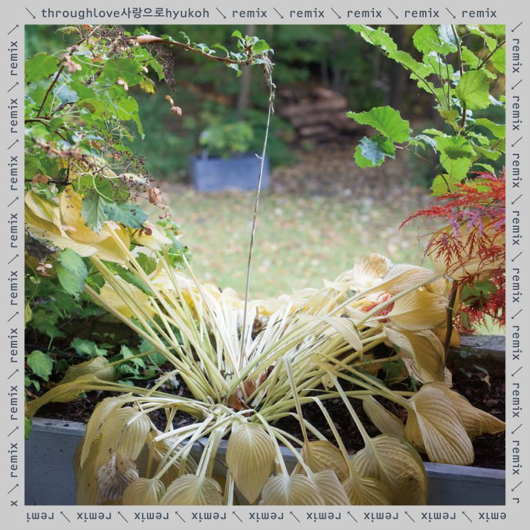
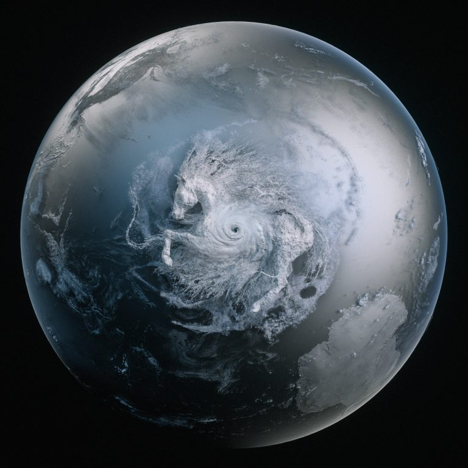
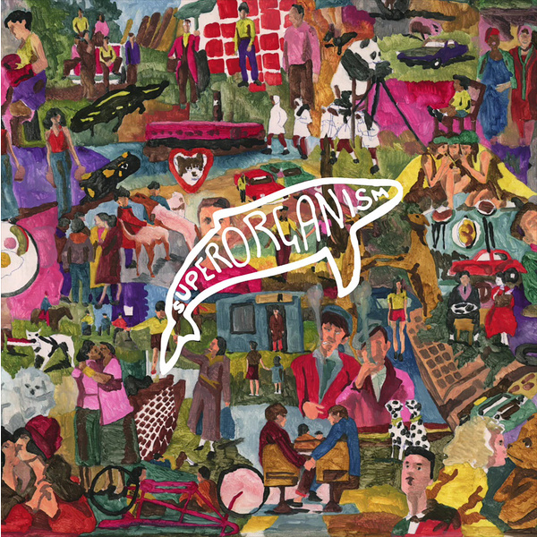
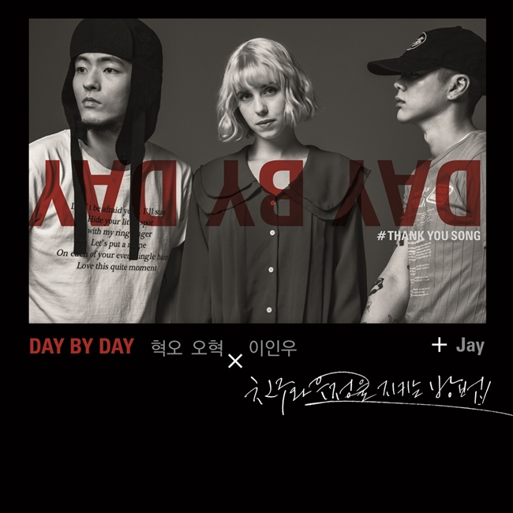
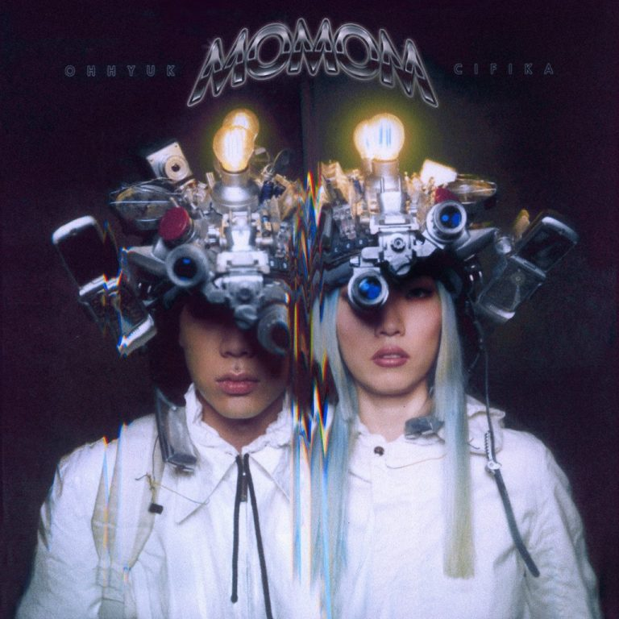
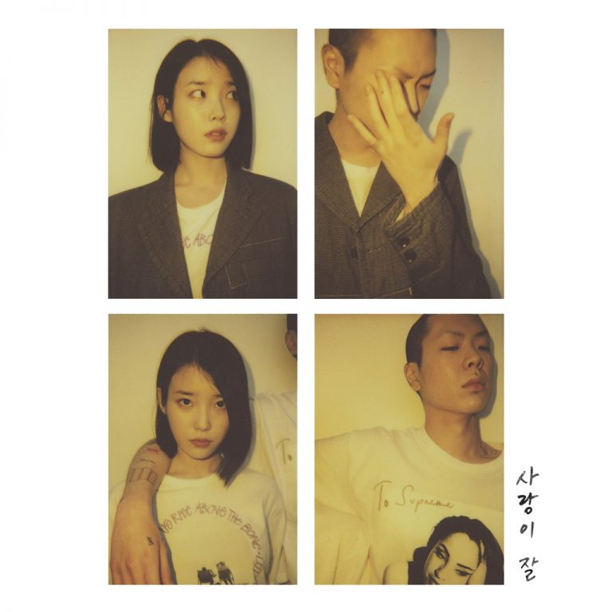
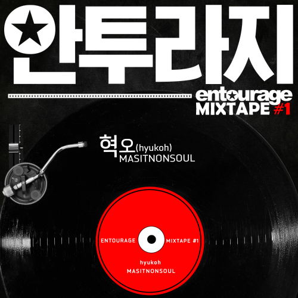
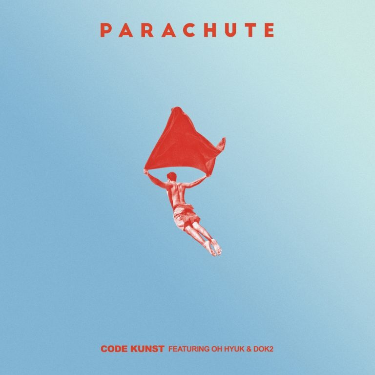
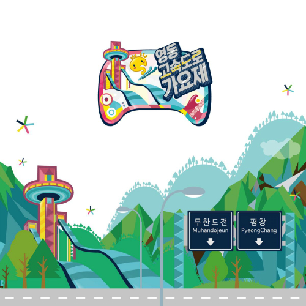
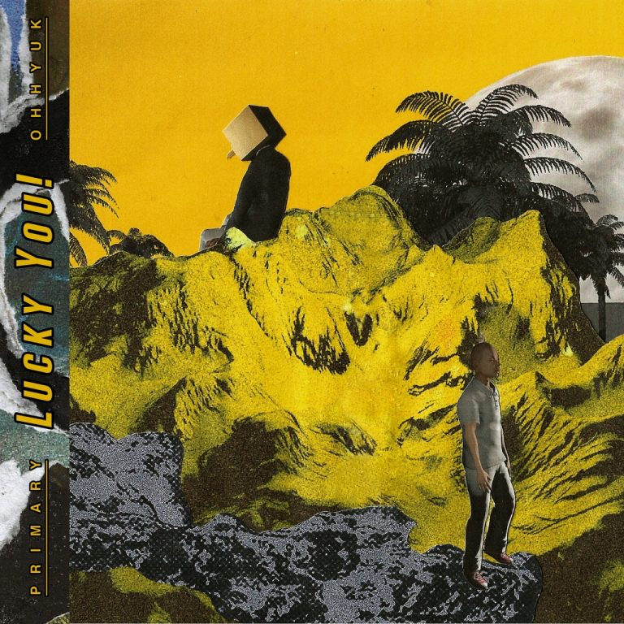

SINGLE & REMIX & OST ALBUMS LIST
[Single] Help (Sunset Rollercoaster 落日飛車 Remake) / 2020.10.08

[Single] Candlelight (feat. OHHYUK)/ 2020.10.06
[Single] Help (IDIOTAPE Remix) / 2020.09.24
[Single] Silverhair Express (장기하 Remix) / 2020.09.17

[Single] SI SHI GU REN LAI @ 경계선의 남자 OST (넷플릭스 오리지널 시리즈 사운드트랙) / 2019.11.22

[Single] Gang Gang Schiele (Superorganism Remix) / 2019.01.08

[Single] 하루가 가고 또 하루가 오면 (Feat. Jay Marie) – 오혁, 인우 @ 봄여름가을겨울 데뷔 30주년 트리뷰트 [친구와 우정을 지키는 방법 앨범] / 2018.10.19
[Single] Golden Goat – 오혁 @ [배드파파] 드라마 OST / 2018.10.15

[Single] MOMOM (몸마음) – 오혁 X 씨피카 / 2018.01.15

[Single] 사랑이 잘 – 오혁 @ 아이유 [사랑이 잘] 싱글 / 2017.04.07

[Single] MASITNONSOUL (맛있는술) @ [안투라지] 드라마 OST / 2016.11.05
[Single] 소녀 – 오혁 @ [응답하라 1988] 드라마 OST / 2015.11.21

[Single] PARACHUTE (Feat. 오혁, Dok2) @ Code Kunst [PARACHUTE] 싱글 / 2015.10.21

[Single] 멋진 헛간 – 오대천왕 (혁오 & 정형돈) @ [무한도전 영동고속도로 가요제] 방송 / 2015.08.22

[Single] Bawling – 오혁 @ 프라이머리 [Lucky You!] EP / 2015.03.24